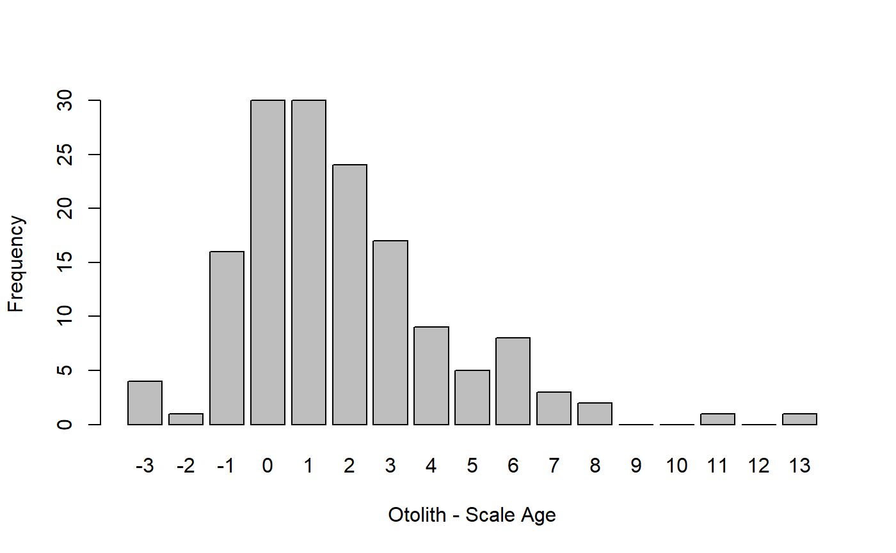
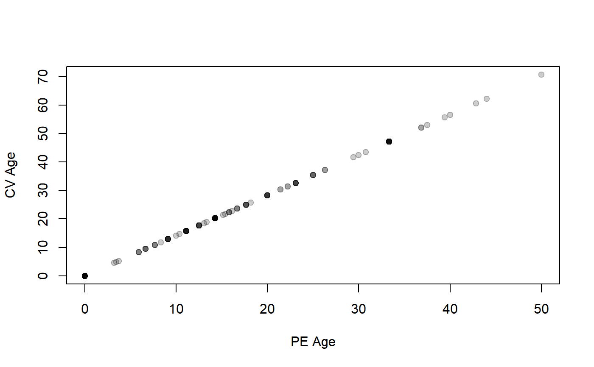

Computes overall measures of precision for multiple age estimates made on the same individuals. Ages may be from two or more readers of the same structure, one reader at two or more times, or two or more structures (e.g., scales, spines, otoliths). Measures of precision include ACV (Average Coefficient of Variation), APE (Average Percent Error), AMAD (Average Mean Absolute Deviation), and ASD (Average Standard Devation), and various percentage difference values.
agePrecision(formula, data) # S3 method for agePrec summary(object, what = c("precision", "difference", "absolute difference", "details"), percent = TRUE, trunc.diff = NULL, digits = 4, ...)
Arguments
| formula | A formula of the form |
|---|---|
| data | A data.frame that minimally contains the variables in |
| object | An object of class |
| what | A string (or vector of strings) that indicates what type of summary to print. See details. |
| percent | A logical that indicates whether the difference table (see details) should be represented as percentages ( |
| trunc.diff | A single integer that identifies the age for which all values that age and greater are combined into one category. See the examples. |
| digits | A single numeric that indicates the minimum number of digits to print when using |
| … | Additional arguments for methods. |
Value
The main function returns a list with the following items:
detail A data.frame with all data given in
dataand intermediate calculations for each fish. See detailsrawdiff A frequency table of fish by differences for each pair of ages.
absdiff A frequency table of fish by absolute differences for each pair of ages.
AMAD The average mean absolute deviation.
APE The average average percent error.
ASD The average standard deviation.
ACV The average coefficient of variation.
R The number of readings for each individual fish.
n Number of fish in
data.validn Number of fish in
datathat have non-NAdata for all R age estimates.
The summary returns the result if what= contains only one item, otherwise it returns nothing. See details for what is printed.
Details
If what="precision" in summary then a summary table that contains the following items will be printed:
n Number of fish in
data.validn Number of fish in
datathat have non-NAdata for all R age estimates.R Number of age estimates given in
formula.ACV The average (across all fish) coefficient of variation of ages within a fish. See the IFAR chapter for calculation details.
APE The average (across all fish) average percent error of ages within a fish. See the IFAR chapter for calculation details.
ASD The average (across all fish) standard deviation of ages within a fish.
AMAD The average (across all fish) mean absolute deviation of ages within a fish.
PercAgree The percentage of fish for which all age estimates perfectly agree.
If what="difference" is used in summary, then a table that describes either the percentage (if percent=TRUE, DEFAULT) or frequency of fish by the difference in paired age estimates. This table has one row for each possible pair of age estimates.
If what="absolute difference" is used in summary, then a table that describes either the percentage (if percent=TRUE, DEFAULT) or frequency of fish by the absolute value of the difference in paired age estimates. This table has one row for each possible pair of age estimates. The “1” column, for example, represents age estimates that disagree by one year (in either direction).
If what="detail" is used in summary, then a data.frame of the original data along with the intermediate calculations of the average age (avg), standard deviation of age (SD), coefficient of variation (CV), mean absolute deviation (MAD), and average percent error (APE) for each individual will be printed. These details are generally only used to check or to understand calculations.
All percentage calculations above use the validn value in the denominator.
Testing
Tested all precision results against published results in Herbst and Marsden (2011) for the WhitefishLC data and the results for the AlewifeLH data set from FSAdata against results from the online resource at http://www.nefsc.noaa.gov/fbp/age-prec/.
IFAR Chapter
4-Age Comparisons.
References
Ogle, D.H. 2016. Introductory Fisheries Analyses with R. Chapman & Hall/CRC, Boca Raton, FL.
Beamish, R.J. and D.A. Fournier. 1981. A method for comparing the precision of a set of age determinations. Canadian Journal of Fisheries and Aquatic Sciences 38:982-983. [Was (is?) available from http://www.pac.dfo-mpo.gc.ca/science/people-gens/beamish/PDF_files/compareagecjfas1981.pdf.]
Campana, S.E. 1982. Accuracy, precision and quality control in age determination, including a review of the use and abuse of age validation methods. Journal of Fish Biology 59:197-242. [Was (is?) available from http://www.denix.osd.mil/nr/crid/Coral_Reef_Iniative_Database/References_for_Reef_Assessment_files/Campana,%202001.pdf.]
Campana, S.E., M.C. Annand, and J.I. McMillan. 1995. Graphical and statistical methods for determining the consistency of age determinations. Transactions of the American Fisheries Society 124:131-138. [Was (is?) available from http://www.bio.gc.ca/otoliths/documents/Campana%20et%20al%201995%20TAFS.pdf.]
Chang, W.Y.B. 1982. A statistical method for evaluating the reproducibility of age determination. Canadian Journal of Fisheries and Aquatic Sciences 39:1208-1210. [Was (is?) available from http://www.nrcresearchpress.com/doi/abs/10.1139/f82-158.]
McBride, R.S. 2015. Diagnosis of paired age agreement: A simulation approach of accuracy and precision effects. ICES Journal of Marine Science, 72:2149-2167.
See also
See ageBias for computation of the full age agreement table, along with tests and plots of age bias.
Examples
## Example with just two age estimates ap1 <- agePrecision(~otolithC+scaleC,data=WhitefishLC) summary(ap1)#> Precision summary statistics #> n validn R ACV APE ASD AMAD PercAgree #> 151 151 2 21.11 14.93 1.541 1.089 19.87 #> #> Percentage of fish by absolute differences in ages #> between pairs of estimates #> 0 1 2 3 4 5 6 7 8 9 #> 19.8675 30.4636 16.5563 13.9073 5.9603 3.3113 5.2980 1.9868 1.3245 0.0000 #> 10 11 12 13 #> 0.0000 0.6623 0.0000 0.6623 #> #> Percentage of fish by differences in ages #> between pairs of estimates #> -3 -2 -1 0 1 2 3 4 5 6 #> 2.6490 0.6623 10.5960 19.8675 19.8675 15.8940 11.2583 5.9603 3.3113 5.2980 #> 7 8 9 10 11 12 13 #> 1.9868 1.3245 0.0000 0.0000 0.6623 0.0000 0.6623 #> #> Intermediate calculations for each individual #> otolithC scaleC avg SD CV MAD APE #> 1 3 3 3.0 0.0000 0.000 0.0 0.000 #> 2 3 4 3.5 0.7071 20.203 0.5 14.286 #> 3 3 6 4.5 2.1213 47.140 1.5 33.333 #> 4 3 4 3.5 0.7071 20.203 0.5 14.286 #> 5 3 3 3.0 0.0000 0.000 0.0 0.000 #> 6 6 4 5.0 1.4142 28.284 1.0 20.000 #> 7 10 7 8.5 2.1213 24.957 1.5 17.647 #> 8 11 5 8.0 4.2426 53.033 3.0 37.500 #> 9 4 3 3.5 0.7071 20.203 0.5 14.286 #> 10 1 1 1.0 0.0000 0.000 0.0 0.000 #> 11 1 2 1.5 0.7071 47.140 0.5 33.333 #> 12 3 4 3.5 0.7071 20.203 0.5 14.286 #> 13 3 3 3.0 0.0000 0.000 0.0 0.000 #> 14 11 6 8.5 3.5355 41.595 2.5 29.412 #> 15 10 6 8.0 2.8284 35.355 2.0 25.000 #> 16 10 6 8.0 2.8284 35.355 2.0 25.000 #> 17 14 6 10.0 5.6569 56.569 4.0 40.000 #> 18 13 6 9.5 4.9497 52.103 3.5 36.842 #> 19 13 7 10.0 4.2426 42.426 3.0 30.000 #> 20 7 6 6.5 0.7071 10.879 0.5 7.692 #> 21 14 7 10.5 4.9497 47.140 3.5 33.333 #> 22 9 7 8.0 1.4142 17.678 1.0 12.500 #> 23 7 5 6.0 1.4142 23.570 1.0 16.667 #> 24 6 5 5.5 0.7071 12.856 0.5 9.091 #> 25 6 3 4.5 2.1213 47.140 1.5 33.333 #> 26 3 4 3.5 0.7071 20.203 0.5 14.286 #> 27 3 4 3.5 0.7071 20.203 0.5 14.286 #> 28 6 5 5.5 0.7071 12.856 0.5 9.091 #> 29 4 6 5.0 1.4142 28.284 1.0 20.000 #> 30 3 3 3.0 0.0000 0.000 0.0 0.000 #> 31 4 4 4.0 0.0000 0.000 0.0 0.000 #> 32 1 1 1.0 0.0000 0.000 0.0 0.000 #> 33 3 3 3.0 0.0000 0.000 0.0 0.000 #> 34 4 4 4.0 0.0000 0.000 0.0 0.000 #> 35 4 2 3.0 1.4142 47.140 1.0 33.333 #> 36 4 3 3.5 0.7071 20.203 0.5 14.286 #> 37 3 3 3.0 0.0000 0.000 0.0 0.000 #> 38 1 2 1.5 0.7071 47.140 0.5 33.333 #> 39 1 1 1.0 0.0000 0.000 0.0 0.000 #> 40 2 1 1.5 0.7071 47.140 0.5 33.333 #> 41 2 1 1.5 0.7071 47.140 0.5 33.333 #> 42 4 3 3.5 0.7071 20.203 0.5 14.286 #> 43 8 5 6.5 2.1213 32.636 1.5 23.077 #> 44 2 5 3.5 2.1213 60.609 1.5 42.857 #> 45 2 3 2.5 0.7071 28.284 0.5 20.000 #> 46 3 3 3.0 0.0000 0.000 0.0 0.000 #> 47 1 2 1.5 0.7071 47.140 0.5 33.333 #> 48 3 3 3.0 0.0000 0.000 0.0 0.000 #> 49 8 5 6.5 2.1213 32.636 1.5 23.077 #> 50 4 3 3.5 0.7071 20.203 0.5 14.286 #> 51 2 2 2.0 0.0000 0.000 0.0 0.000 #> 52 3 3 3.0 0.0000 0.000 0.0 0.000 #> 53 3 3 3.0 0.0000 0.000 0.0 0.000 #> 54 8 5 6.5 2.1213 32.636 1.5 23.077 #> 55 4 4 4.0 0.0000 0.000 0.0 0.000 #> 56 6 5 5.5 0.7071 12.856 0.5 9.091 #> 57 7 5 6.0 1.4142 23.570 1.0 16.667 #> 58 2 1 1.5 0.7071 47.140 0.5 33.333 #> 59 1 1 1.0 0.0000 0.000 0.0 0.000 #> 60 2 1 1.5 0.7071 47.140 0.5 33.333 #> 61 1 2 1.5 0.7071 47.140 0.5 33.333 #> 62 5 4 4.5 0.7071 15.713 0.5 11.111 #> 63 5 4 4.5 0.7071 15.713 0.5 11.111 #> 64 4 5 4.5 0.7071 15.713 0.5 11.111 #> 65 5 6 5.5 0.7071 12.856 0.5 9.091 #> 66 18 7 12.5 7.7782 62.225 5.5 44.000 #> 67 7 8 7.5 0.7071 9.428 0.5 6.667 #> 68 9 8 8.5 0.7071 8.319 0.5 5.882 #> 69 5 4 4.5 0.7071 15.713 0.5 11.111 #> 70 10 8 9.0 1.4142 15.713 1.0 11.111 #> 71 12 7 9.5 3.5355 37.216 2.5 26.316 #> 72 7 5 6.0 1.4142 23.570 1.0 16.667 #> 73 10 8 9.0 1.4142 15.713 1.0 11.111 #> 74 9 6 7.5 2.1213 28.284 1.5 20.000 #> 75 11 7 9.0 2.8284 31.427 2.0 22.222 #> 76 1 1 1.0 0.0000 0.000 0.0 0.000 #> 77 3 1 2.0 1.4142 70.711 1.0 50.000 #> 78 14 13 13.5 0.7071 5.238 0.5 3.704 #> 79 8 6 7.0 1.4142 20.203 1.0 14.286 #> 80 12 6 9.0 4.2426 47.140 3.0 33.333 #> 81 11 9 10.0 1.4142 14.142 1.0 10.000 #> 82 9 7 8.0 1.4142 17.678 1.0 12.500 #> 83 8 7 7.5 0.7071 9.428 0.5 6.667 #> 84 5 8 6.5 2.1213 32.636 1.5 23.077 #> 85 8 7 7.5 0.7071 9.428 0.5 6.667 #> 86 18 13 15.5 3.5355 22.810 2.5 16.129 #> 87 12 10 11.0 1.4142 12.856 1.0 9.091 #> 88 11 8 9.5 2.1213 22.330 1.5 15.789 #> 89 9 8 8.5 0.7071 8.319 0.5 5.882 #> 90 11 8 9.5 2.1213 22.330 1.5 15.789 #> 91 13 9 11.0 2.8284 25.713 2.0 18.182 #> 92 9 7 8.0 1.4142 17.678 1.0 12.500 #> 93 10 7 8.5 2.1213 24.957 1.5 17.647 #> 94 4 4 4.0 0.0000 0.000 0.0 0.000 #> 95 6 4 5.0 1.4142 28.284 1.0 20.000 #> 96 4 3 3.5 0.7071 20.203 0.5 14.286 #> 97 4 3 3.5 0.7071 20.203 0.5 14.286 #> 98 6 6 6.0 0.0000 0.000 0.0 0.000 #> 99 11 7 9.0 2.8284 31.427 2.0 22.222 #> 100 8 6 7.0 1.4142 20.203 1.0 14.286 #> 101 8 5 6.5 2.1213 32.636 1.5 23.077 #> 102 5 6 5.5 0.7071 12.856 0.5 9.091 #> 103 6 5 5.5 0.7071 12.856 0.5 9.091 #> 104 6 4 5.0 1.4142 28.284 1.0 20.000 #> 105 9 7 8.0 1.4142 17.678 1.0 12.500 #> 106 13 10 11.5 2.1213 18.446 1.5 13.043 #> 107 9 7 8.0 1.4142 17.678 1.0 12.500 #> 108 12 7 9.5 3.5355 37.216 2.5 26.316 #> 109 5 5 5.0 0.0000 0.000 0.0 0.000 #> 110 4 4 4.0 0.0000 0.000 0.0 0.000 #> 111 7 7 7.0 0.0000 0.000 0.0 0.000 #> 112 4 4 4.0 0.0000 0.000 0.0 0.000 #> 113 4 4 4.0 0.0000 0.000 0.0 0.000 #> 114 10 7 8.5 2.1213 24.957 1.5 17.647 #> 115 7 6 6.5 0.7071 10.879 0.5 7.692 #> 116 5 5 5.0 0.0000 0.000 0.0 0.000 #> 117 17 9 13.0 5.6569 43.514 4.0 30.769 #> 118 7 6 6.5 0.7071 10.879 0.5 7.692 #> 119 10 8 9.0 1.4142 15.713 1.0 11.111 #> 120 11 8 9.5 2.1213 22.330 1.5 15.789 #> 121 12 8 10.0 2.8284 28.284 2.0 20.000 #> 122 4 5 4.5 0.7071 15.713 0.5 11.111 #> 123 8 7 7.5 0.7071 9.428 0.5 6.667 #> 124 12 9 10.5 2.1213 20.203 1.5 14.286 #> 125 17 11 14.0 4.2426 30.305 3.0 21.429 #> 126 13 13 13.0 0.0000 0.000 0.0 0.000 #> 127 16 13 14.5 2.1213 14.630 1.5 10.345 #> 128 17 11 14.0 4.2426 30.305 3.0 21.429 #> 129 15 12 13.5 2.1213 15.713 1.5 11.111 #> 130 4 5 4.5 0.7071 15.713 0.5 11.111 #> 131 13 11 12.0 1.4142 11.785 1.0 8.333 #> 132 16 10 13.0 4.2426 32.636 3.0 23.077 #> 133 7 10 8.5 2.1213 24.957 1.5 17.647 #> 134 6 5 5.5 0.7071 12.856 0.5 9.091 #> 135 16 12 14.0 2.8284 20.203 2.0 14.286 #> 136 15 11 13.0 2.8284 21.757 2.0 15.385 #> 137 15 14 14.5 0.7071 4.877 0.5 3.448 #> 138 8 6 7.0 1.4142 20.203 1.0 14.286 #> 139 10 7 8.5 2.1213 24.957 1.5 17.647 #> 140 8 8 8.0 0.0000 0.000 0.0 0.000 #> 141 19 14 16.5 3.5355 21.427 2.5 15.152 #> 142 9 8 8.5 0.7071 8.319 0.5 5.882 #> [ reached getOption("max.print") -- omitted 9 rows ]summary(ap1,what="precision")#> n validn R ACV APE ASD AMAD PercAgree #> 151 151 2 21.11 14.93 1.541 1.089 19.87summary(ap1,what="difference")#> -3 -2 -1 0 1 2 3 4 5 6 #> 2.6490 0.6623 10.5960 19.8675 19.8675 15.8940 11.2583 5.9603 3.3113 5.2980 #> 7 8 9 10 11 12 13 #> 1.9868 1.3245 0.0000 0.0000 0.6623 0.0000 0.6623summary(ap1,what="difference",percent=FALSE)#> -3 -2 -1 0 1 2 3 4 5 6 7 8 9 10 11 12 13 #> 4 1 16 30 30 24 17 9 5 8 3 2 0 0 1 0 1summary(ap1,what="absolute")#> 0 1 2 3 4 5 6 7 8 9 #> 19.8675 30.4636 16.5563 13.9073 5.9603 3.3113 5.2980 1.9868 1.3245 0.0000 #> 10 11 12 13 #> 0.0000 0.6623 0.0000 0.6623summary(ap1,what="absolute",percent=FALSE)#> 0 1 2 3 4 5 6 7 8 9 10 11 12 13 #> 30 46 25 21 9 5 8 3 2 0 0 1 0 1summary(ap1,what="absolute",trunc.diff=4)#> 0 1 2 3 4+ #> 19.87 30.46 16.56 13.91 19.21summary(ap1,what="absolute",percent=FALSE)#> 0 1 2 3 4 5 6 7 8 9 10 11 12 13 #> 30 46 25 21 9 5 8 3 2 0 0 1 0 1summary(ap1,what=c("precision","difference"))#> Precision summary statistics #> n validn R ACV APE ASD AMAD PercAgree #> 151 151 2 21.11 14.93 1.541 1.089 19.87 #> #> Percentage of fish by differences in ages #> between pairs of estimates #> -3 -2 -1 0 1 2 3 4 5 6 #> 2.6490 0.6623 10.5960 19.8675 19.8675 15.8940 11.2583 5.9603 3.3113 5.2980 #> 7 8 9 10 11 12 13 #> 1.9868 1.3245 0.0000 0.0000 0.6623 0.0000 0.6623summary(ap1,what="detail")#> otolithC scaleC avg SD CV MAD APE #> 1 3 3 3.0 0.0000 0.000 0.0 0.000 #> 2 3 4 3.5 0.7071 20.203 0.5 14.286 #> 3 3 6 4.5 2.1213 47.140 1.5 33.333 #> 4 3 4 3.5 0.7071 20.203 0.5 14.286 #> 5 3 3 3.0 0.0000 0.000 0.0 0.000 #> 6 6 4 5.0 1.4142 28.284 1.0 20.000 #> 7 10 7 8.5 2.1213 24.957 1.5 17.647 #> 8 11 5 8.0 4.2426 53.033 3.0 37.500 #> 9 4 3 3.5 0.7071 20.203 0.5 14.286 #> 10 1 1 1.0 0.0000 0.000 0.0 0.000 #> 11 1 2 1.5 0.7071 47.140 0.5 33.333 #> 12 3 4 3.5 0.7071 20.203 0.5 14.286 #> 13 3 3 3.0 0.0000 0.000 0.0 0.000 #> 14 11 6 8.5 3.5355 41.595 2.5 29.412 #> 15 10 6 8.0 2.8284 35.355 2.0 25.000 #> 16 10 6 8.0 2.8284 35.355 2.0 25.000 #> 17 14 6 10.0 5.6569 56.569 4.0 40.000 #> 18 13 6 9.5 4.9497 52.103 3.5 36.842 #> 19 13 7 10.0 4.2426 42.426 3.0 30.000 #> 20 7 6 6.5 0.7071 10.879 0.5 7.692 #> 21 14 7 10.5 4.9497 47.140 3.5 33.333 #> 22 9 7 8.0 1.4142 17.678 1.0 12.500 #> 23 7 5 6.0 1.4142 23.570 1.0 16.667 #> 24 6 5 5.5 0.7071 12.856 0.5 9.091 #> 25 6 3 4.5 2.1213 47.140 1.5 33.333 #> 26 3 4 3.5 0.7071 20.203 0.5 14.286 #> 27 3 4 3.5 0.7071 20.203 0.5 14.286 #> 28 6 5 5.5 0.7071 12.856 0.5 9.091 #> 29 4 6 5.0 1.4142 28.284 1.0 20.000 #> 30 3 3 3.0 0.0000 0.000 0.0 0.000 #> 31 4 4 4.0 0.0000 0.000 0.0 0.000 #> 32 1 1 1.0 0.0000 0.000 0.0 0.000 #> 33 3 3 3.0 0.0000 0.000 0.0 0.000 #> 34 4 4 4.0 0.0000 0.000 0.0 0.000 #> 35 4 2 3.0 1.4142 47.140 1.0 33.333 #> 36 4 3 3.5 0.7071 20.203 0.5 14.286 #> 37 3 3 3.0 0.0000 0.000 0.0 0.000 #> 38 1 2 1.5 0.7071 47.140 0.5 33.333 #> 39 1 1 1.0 0.0000 0.000 0.0 0.000 #> 40 2 1 1.5 0.7071 47.140 0.5 33.333 #> 41 2 1 1.5 0.7071 47.140 0.5 33.333 #> 42 4 3 3.5 0.7071 20.203 0.5 14.286 #> 43 8 5 6.5 2.1213 32.636 1.5 23.077 #> 44 2 5 3.5 2.1213 60.609 1.5 42.857 #> 45 2 3 2.5 0.7071 28.284 0.5 20.000 #> 46 3 3 3.0 0.0000 0.000 0.0 0.000 #> 47 1 2 1.5 0.7071 47.140 0.5 33.333 #> 48 3 3 3.0 0.0000 0.000 0.0 0.000 #> 49 8 5 6.5 2.1213 32.636 1.5 23.077 #> 50 4 3 3.5 0.7071 20.203 0.5 14.286 #> 51 2 2 2.0 0.0000 0.000 0.0 0.000 #> 52 3 3 3.0 0.0000 0.000 0.0 0.000 #> 53 3 3 3.0 0.0000 0.000 0.0 0.000 #> 54 8 5 6.5 2.1213 32.636 1.5 23.077 #> 55 4 4 4.0 0.0000 0.000 0.0 0.000 #> 56 6 5 5.5 0.7071 12.856 0.5 9.091 #> 57 7 5 6.0 1.4142 23.570 1.0 16.667 #> 58 2 1 1.5 0.7071 47.140 0.5 33.333 #> 59 1 1 1.0 0.0000 0.000 0.0 0.000 #> 60 2 1 1.5 0.7071 47.140 0.5 33.333 #> 61 1 2 1.5 0.7071 47.140 0.5 33.333 #> 62 5 4 4.5 0.7071 15.713 0.5 11.111 #> 63 5 4 4.5 0.7071 15.713 0.5 11.111 #> 64 4 5 4.5 0.7071 15.713 0.5 11.111 #> 65 5 6 5.5 0.7071 12.856 0.5 9.091 #> 66 18 7 12.5 7.7782 62.225 5.5 44.000 #> 67 7 8 7.5 0.7071 9.428 0.5 6.667 #> 68 9 8 8.5 0.7071 8.319 0.5 5.882 #> 69 5 4 4.5 0.7071 15.713 0.5 11.111 #> 70 10 8 9.0 1.4142 15.713 1.0 11.111 #> 71 12 7 9.5 3.5355 37.216 2.5 26.316 #> 72 7 5 6.0 1.4142 23.570 1.0 16.667 #> 73 10 8 9.0 1.4142 15.713 1.0 11.111 #> 74 9 6 7.5 2.1213 28.284 1.5 20.000 #> 75 11 7 9.0 2.8284 31.427 2.0 22.222 #> 76 1 1 1.0 0.0000 0.000 0.0 0.000 #> 77 3 1 2.0 1.4142 70.711 1.0 50.000 #> 78 14 13 13.5 0.7071 5.238 0.5 3.704 #> 79 8 6 7.0 1.4142 20.203 1.0 14.286 #> 80 12 6 9.0 4.2426 47.140 3.0 33.333 #> 81 11 9 10.0 1.4142 14.142 1.0 10.000 #> 82 9 7 8.0 1.4142 17.678 1.0 12.500 #> 83 8 7 7.5 0.7071 9.428 0.5 6.667 #> 84 5 8 6.5 2.1213 32.636 1.5 23.077 #> 85 8 7 7.5 0.7071 9.428 0.5 6.667 #> 86 18 13 15.5 3.5355 22.810 2.5 16.129 #> 87 12 10 11.0 1.4142 12.856 1.0 9.091 #> 88 11 8 9.5 2.1213 22.330 1.5 15.789 #> 89 9 8 8.5 0.7071 8.319 0.5 5.882 #> 90 11 8 9.5 2.1213 22.330 1.5 15.789 #> 91 13 9 11.0 2.8284 25.713 2.0 18.182 #> 92 9 7 8.0 1.4142 17.678 1.0 12.500 #> 93 10 7 8.5 2.1213 24.957 1.5 17.647 #> 94 4 4 4.0 0.0000 0.000 0.0 0.000 #> 95 6 4 5.0 1.4142 28.284 1.0 20.000 #> 96 4 3 3.5 0.7071 20.203 0.5 14.286 #> 97 4 3 3.5 0.7071 20.203 0.5 14.286 #> 98 6 6 6.0 0.0000 0.000 0.0 0.000 #> 99 11 7 9.0 2.8284 31.427 2.0 22.222 #> 100 8 6 7.0 1.4142 20.203 1.0 14.286 #> 101 8 5 6.5 2.1213 32.636 1.5 23.077 #> 102 5 6 5.5 0.7071 12.856 0.5 9.091 #> 103 6 5 5.5 0.7071 12.856 0.5 9.091 #> 104 6 4 5.0 1.4142 28.284 1.0 20.000 #> 105 9 7 8.0 1.4142 17.678 1.0 12.500 #> 106 13 10 11.5 2.1213 18.446 1.5 13.043 #> 107 9 7 8.0 1.4142 17.678 1.0 12.500 #> 108 12 7 9.5 3.5355 37.216 2.5 26.316 #> 109 5 5 5.0 0.0000 0.000 0.0 0.000 #> 110 4 4 4.0 0.0000 0.000 0.0 0.000 #> 111 7 7 7.0 0.0000 0.000 0.0 0.000 #> 112 4 4 4.0 0.0000 0.000 0.0 0.000 #> 113 4 4 4.0 0.0000 0.000 0.0 0.000 #> 114 10 7 8.5 2.1213 24.957 1.5 17.647 #> 115 7 6 6.5 0.7071 10.879 0.5 7.692 #> 116 5 5 5.0 0.0000 0.000 0.0 0.000 #> 117 17 9 13.0 5.6569 43.514 4.0 30.769 #> 118 7 6 6.5 0.7071 10.879 0.5 7.692 #> 119 10 8 9.0 1.4142 15.713 1.0 11.111 #> 120 11 8 9.5 2.1213 22.330 1.5 15.789 #> 121 12 8 10.0 2.8284 28.284 2.0 20.000 #> 122 4 5 4.5 0.7071 15.713 0.5 11.111 #> 123 8 7 7.5 0.7071 9.428 0.5 6.667 #> 124 12 9 10.5 2.1213 20.203 1.5 14.286 #> 125 17 11 14.0 4.2426 30.305 3.0 21.429 #> 126 13 13 13.0 0.0000 0.000 0.0 0.000 #> 127 16 13 14.5 2.1213 14.630 1.5 10.345 #> 128 17 11 14.0 4.2426 30.305 3.0 21.429 #> 129 15 12 13.5 2.1213 15.713 1.5 11.111 #> 130 4 5 4.5 0.7071 15.713 0.5 11.111 #> 131 13 11 12.0 1.4142 11.785 1.0 8.333 #> 132 16 10 13.0 4.2426 32.636 3.0 23.077 #> 133 7 10 8.5 2.1213 24.957 1.5 17.647 #> 134 6 5 5.5 0.7071 12.856 0.5 9.091 #> 135 16 12 14.0 2.8284 20.203 2.0 14.286 #> 136 15 11 13.0 2.8284 21.757 2.0 15.385 #> 137 15 14 14.5 0.7071 4.877 0.5 3.448 #> 138 8 6 7.0 1.4142 20.203 1.0 14.286 #> 139 10 7 8.5 2.1213 24.957 1.5 17.647 #> 140 8 8 8.0 0.0000 0.000 0.0 0.000 #> 141 19 14 16.5 3.5355 21.427 2.5 15.152 #> 142 9 8 8.5 0.7071 8.319 0.5 5.882 #> [ reached getOption("max.print") -- omitted 9 rows ]barplot(ap1$rawdiff,ylab="Frequency",xlab="Otolith - Scale Age")## Example with three age estimates ap2 <- agePrecision(~otolithC+finrayC+scaleC,data=WhitefishLC) summary(ap2)#> Precision summary statistics #> n validn R ACV APE ASD AMAD PercAgree #> 151 151 3 21.77 16.19 1.487 1.104 12.58 #> #> Percentage of fish by absolute differences in ages #> between pairs of estimates #> 0 1 2 3 4 5 6 #> otolithC v. finrayC 24.5033 21.1921 17.8808 11.9205 7.2848 7.9470 3.3113 #> otolithC v. scaleC 19.8675 30.4636 16.5563 13.9073 5.9603 3.3113 5.2980 #> finrayC v. scaleC 40.3974 34.4371 15.2318 5.2980 3.9735 0.0000 0.6623 #> 7 8 9 10 11 12 13 #> otolithC v. finrayC 2.6490 0.6623 1.3245 0.0000 0.6623 0.0000 0.0000 #> otolithC v. scaleC 1.9868 1.3245 0.0000 0.0000 0.6623 0.0000 0.6623 #> finrayC v. scaleC 0.0000 0.0000 0.0000 0.0000 0.0000 0.0000 0.0000 #> 14 #> otolithC v. finrayC 0.6623 #> otolithC v. scaleC 0.0000 #> finrayC v. scaleC 0.0000 #> #> Percentage of fish by differences in ages #> between pairs of estimates #> -4 -3 -2 -1 0 1 2 #> otolithC - finrayC 0.0000 0.0000 1.3245 3.3113 24.5033 17.8808 16.5563 #> otolithC - scaleC 0.0000 2.6490 0.6623 10.5960 19.8675 19.8675 15.8940 #> finrayC - scaleC 3.3113 4.6358 12.5828 19.8675 40.3974 14.5695 2.6490 #> 3 4 5 6 7 8 9 #> otolithC - finrayC 11.9205 7.2848 7.9470 3.3113 2.6490 0.6623 1.3245 #> otolithC - scaleC 11.2583 5.9603 3.3113 5.2980 1.9868 1.3245 0.0000 #> finrayC - scaleC 0.6623 0.6623 0.0000 0.6623 0.0000 0.0000 0.0000 #> 10 11 12 13 14 #> otolithC - finrayC 0.0000 0.6623 0.0000 0.0000 0.6623 #> otolithC - scaleC 0.0000 0.6623 0.0000 0.6623 0.0000 #> finrayC - scaleC 0.0000 0.0000 0.0000 0.0000 0.0000 #> #> Intermediate calculations for each individual #> otolithC finrayC scaleC avg SD CV MAD APE #> 1 3 3 3 3.000 0.0000 0.000 0.0000 0.000 #> 2 3 3 4 3.333 0.5774 17.321 0.4444 13.333 #> 3 3 3 6 4.000 1.7321 43.301 1.3333 33.333 #> 4 3 3 4 3.333 0.5774 17.321 0.4444 13.333 #> 5 3 4 3 3.333 0.5774 17.321 0.4444 13.333 #> 6 6 3 4 4.333 1.5275 35.251 1.1111 25.641 #> 7 10 6 7 7.667 2.0817 27.152 1.5556 20.290 #> 8 11 9 5 8.333 3.0551 36.661 2.2222 26.667 #> 9 4 3 3 3.333 0.5774 17.321 0.4444 13.333 #> 10 1 1 1 1.000 0.0000 0.000 0.0000 0.000 #> 11 1 2 2 1.667 0.5774 34.641 0.4444 26.667 #> 12 3 3 4 3.333 0.5774 17.321 0.4444 13.333 #> 13 3 3 3 3.000 0.0000 0.000 0.0000 0.000 #> 14 11 8 6 8.333 2.5166 30.199 1.7778 21.333 #> 15 10 7 6 7.667 2.0817 27.152 1.5556 20.290 #> 16 10 6 6 7.333 2.3094 31.492 1.7778 24.242 #> 17 14 12 6 10.667 4.1633 39.031 3.1111 29.167 #> 18 13 6 6 8.333 4.0415 48.497 3.1111 37.333 #> 19 13 8 7 9.333 3.2146 34.442 2.4444 26.190 #> 20 7 6 6 6.333 0.5774 9.116 0.4444 7.018 #> 21 14 7 7 9.333 4.0415 43.301 3.1111 33.333 #> 22 9 6 7 7.333 1.5275 20.830 1.1111 15.152 #> 23 7 4 5 5.333 1.5275 28.641 1.1111 20.833 #> 24 6 6 5 5.667 0.5774 10.189 0.4444 7.843 #> 25 6 6 3 5.000 1.7321 34.641 1.3333 26.667 #> 26 3 3 4 3.333 0.5774 17.321 0.4444 13.333 #> 27 3 3 4 3.333 0.5774 17.321 0.4444 13.333 #> 28 6 4 5 5.000 1.0000 20.000 0.6667 13.333 #> 29 4 4 6 4.667 1.1547 24.744 0.8889 19.048 #> 30 3 3 3 3.000 0.0000 0.000 0.0000 0.000 #> 31 4 3 4 3.667 0.5774 15.746 0.4444 12.121 #> 32 1 1 1 1.000 0.0000 0.000 0.0000 0.000 #> 33 3 3 3 3.000 0.0000 0.000 0.0000 0.000 #> 34 4 2 4 3.333 1.1547 34.641 0.8889 26.667 #> 35 4 3 2 3.000 1.0000 33.333 0.6667 22.222 #> 36 4 3 3 3.333 0.5774 17.321 0.4444 13.333 #> 37 3 3 3 3.000 0.0000 0.000 0.0000 0.000 #> 38 1 3 2 2.000 1.0000 50.000 0.6667 33.333 #> 39 1 2 1 1.333 0.5774 43.301 0.4444 33.333 #> 40 2 1 1 1.333 0.5774 43.301 0.4444 33.333 #> 41 2 1 1 1.333 0.5774 43.301 0.4444 33.333 #> 42 4 3 3 3.333 0.5774 17.321 0.4444 13.333 #> 43 8 6 5 6.333 1.5275 24.119 1.1111 17.544 #> 44 2 3 5 3.333 1.5275 45.826 1.1111 33.333 #> 45 2 4 3 3.000 1.0000 33.333 0.6667 22.222 #> 46 3 2 3 2.667 0.5774 21.651 0.4444 16.667 #> 47 1 1 2 1.333 0.5774 43.301 0.4444 33.333 #> 48 3 3 3 3.000 0.0000 0.000 0.0000 0.000 #> 49 8 7 5 6.667 1.5275 22.913 1.1111 16.667 #> 50 4 4 3 3.667 0.5774 15.746 0.4444 12.121 #> 51 2 2 2 2.000 0.0000 0.000 0.0000 0.000 #> 52 3 3 3 3.000 0.0000 0.000 0.0000 0.000 #> 53 3 3 3 3.000 0.0000 0.000 0.0000 0.000 #> 54 8 6 5 6.333 1.5275 24.119 1.1111 17.544 #> 55 4 4 4 4.000 0.0000 0.000 0.0000 0.000 #> 56 6 6 5 5.667 0.5774 10.189 0.4444 7.843 #> 57 7 5 5 5.667 1.1547 20.377 0.8889 15.686 #> 58 2 1 1 1.333 0.5774 43.301 0.4444 33.333 #> 59 1 1 1 1.000 0.0000 0.000 0.0000 0.000 #> 60 2 1 1 1.333 0.5774 43.301 0.4444 33.333 #> 61 1 1 2 1.333 0.5774 43.301 0.4444 33.333 #> 62 5 5 4 4.667 0.5774 12.372 0.4444 9.524 #> 63 5 4 4 4.333 0.5774 13.323 0.4444 10.256 #> 64 4 4 5 4.333 0.5774 13.323 0.4444 10.256 #> 65 5 3 6 4.667 1.5275 32.733 1.1111 23.810 #> 66 18 7 7 10.667 6.3509 59.539 4.8889 45.833 #> 67 7 5 8 6.667 1.5275 22.913 1.1111 16.667 #> 68 9 6 8 7.667 1.5275 19.924 1.1111 14.493 #> 69 5 4 4 4.333 0.5774 13.323 0.4444 10.256 #> 70 10 6 8 8.000 2.0000 25.000 1.3333 16.667 #> 71 12 7 7 8.667 2.8868 33.309 2.2222 25.641 #> 72 7 6 5 6.000 1.0000 16.667 0.6667 11.111 #> 73 10 7 8 8.333 1.5275 18.330 1.1111 13.333 #> 74 9 5 6 6.667 2.0817 31.225 1.5556 23.333 #> 75 11 7 7 8.333 2.3094 27.713 1.7778 21.333 #> 76 1 1 1 1.000 0.0000 0.000 0.0000 0.000 #> 77 3 2 1 2.000 1.0000 50.000 0.6667 33.333 #> 78 14 9 13 12.000 2.6458 22.048 2.0000 16.667 #> 79 8 6 6 6.667 1.1547 17.321 0.8889 13.333 #> 80 12 7 6 8.333 3.2146 38.575 2.4444 29.333 #> 81 11 7 9 9.000 2.0000 22.222 1.3333 14.815 #> 82 9 7 7 7.667 1.1547 15.061 0.8889 11.594 #> 83 8 6 7 7.000 1.0000 14.286 0.6667 9.524 #> 84 5 4 8 5.667 2.0817 36.735 1.5556 27.451 #> 85 8 6 7 7.000 1.0000 14.286 0.6667 9.524 #> 86 18 9 13 13.333 4.5092 33.819 3.1111 23.333 #> 87 12 8 10 10.000 2.0000 20.000 1.3333 13.333 #> 88 11 5 8 8.000 3.0000 37.500 2.0000 25.000 #> 89 9 6 8 7.667 1.5275 19.924 1.1111 14.493 #> 90 11 8 8 9.000 1.7321 19.245 1.3333 14.815 #> 91 13 7 9 9.667 3.0551 31.604 2.2222 22.989 #> 92 9 6 7 7.333 1.5275 20.830 1.1111 15.152 #> 93 10 7 7 8.000 1.7321 21.651 1.3333 16.667 #> 94 4 3 4 3.667 0.5774 15.746 0.4444 12.121 #> 95 6 4 4 4.667 1.1547 24.744 0.8889 19.048 #> 96 4 3 3 3.333 0.5774 17.321 0.4444 13.333 #> 97 4 3 3 3.333 0.5774 17.321 0.4444 13.333 #> 98 6 6 6 6.000 0.0000 0.000 0.0000 0.000 #> 99 11 7 7 8.333 2.3094 27.713 1.7778 21.333 #> 100 8 6 6 6.667 1.1547 17.321 0.8889 13.333 #> 101 8 5 5 6.000 1.7321 28.868 1.3333 22.222 #> 102 5 5 6 5.333 0.5774 10.825 0.4444 8.333 #> 103 6 4 5 5.000 1.0000 20.000 0.6667 13.333 #> 104 6 4 4 4.667 1.1547 24.744 0.8889 19.048 #> 105 9 7 7 7.667 1.1547 15.061 0.8889 11.594 #> 106 13 10 10 11.000 1.7321 15.746 1.3333 12.121 #> 107 9 8 7 8.000 1.0000 12.500 0.6667 8.333 #> 108 12 7 7 8.667 2.8868 33.309 2.2222 25.641 #> 109 5 5 5 5.000 0.0000 0.000 0.0000 0.000 #> 110 4 4 4 4.000 0.0000 0.000 0.0000 0.000 #> 111 7 5 7 6.333 1.1547 18.232 0.8889 14.035 #> 112 4 4 4 4.000 0.0000 0.000 0.0000 0.000 #> 113 4 4 4 4.000 0.0000 0.000 0.0000 0.000 #> 114 10 7 7 8.000 1.7321 21.651 1.3333 16.667 #> 115 7 6 6 6.333 0.5774 9.116 0.4444 7.018 #> 116 5 4 5 4.667 0.5774 12.372 0.4444 9.524 #> 117 17 10 9 12.000 4.3589 36.324 3.3333 27.778 #> 118 7 6 6 6.333 0.5774 9.116 0.4444 7.018 #> 119 10 8 8 8.667 1.1547 13.323 0.8889 10.256 #> 120 11 9 8 9.333 1.5275 16.366 1.1111 11.905 #> 121 12 7 8 9.000 2.6458 29.397 2.0000 22.222 #> 122 4 4 5 4.333 0.5774 13.323 0.4444 10.256 #> 123 8 7 7 7.333 0.5774 7.873 0.4444 6.061 #> 124 12 7 9 9.333 2.5166 26.964 1.7778 19.048 #> 125 17 9 11 12.333 4.1633 33.757 3.1111 25.225 #> [ reached getOption("max.print") -- omitted 26 rows ]summary(ap2,what="precision")#> n validn R ACV APE ASD AMAD PercAgree #> 151 151 3 21.77 16.19 1.487 1.104 12.58summary(ap2,what="difference")#> -4 -3 -2 -1 0 1 2 #> otolithC - finrayC 0.0000 0.0000 1.3245 3.3113 24.5033 17.8808 16.5563 #> otolithC - scaleC 0.0000 2.6490 0.6623 10.5960 19.8675 19.8675 15.8940 #> finrayC - scaleC 3.3113 4.6358 12.5828 19.8675 40.3974 14.5695 2.6490 #> 3 4 5 6 7 8 9 #> otolithC - finrayC 11.9205 7.2848 7.9470 3.3113 2.6490 0.6623 1.3245 #> otolithC - scaleC 11.2583 5.9603 3.3113 5.2980 1.9868 1.3245 0.0000 #> finrayC - scaleC 0.6623 0.6623 0.0000 0.6623 0.0000 0.0000 0.0000 #> 10 11 12 13 14 #> otolithC - finrayC 0.0000 0.6623 0.0000 0.0000 0.6623 #> otolithC - scaleC 0.0000 0.6623 0.0000 0.6623 0.0000 #> finrayC - scaleC 0.0000 0.0000 0.0000 0.0000 0.0000summary(ap2,what="difference",percent=FALSE)#> -4 -3 -2 -1 0 1 2 3 4 5 6 7 8 9 10 11 12 13 14 #> otolithC - finrayC 0 0 2 5 37 27 25 18 11 12 5 4 1 2 0 1 0 0 1 #> otolithC - scaleC 0 4 1 16 30 30 24 17 9 5 8 3 2 0 0 1 0 1 0 #> finrayC - scaleC 5 7 19 30 61 22 4 1 1 0 1 0 0 0 0 0 0 0 0summary(ap2,what="absolute")#> 0 1 2 3 4 5 6 #> otolithC v. finrayC 24.5033 21.1921 17.8808 11.9205 7.2848 7.9470 3.3113 #> otolithC v. scaleC 19.8675 30.4636 16.5563 13.9073 5.9603 3.3113 5.2980 #> finrayC v. scaleC 40.3974 34.4371 15.2318 5.2980 3.9735 0.0000 0.6623 #> 7 8 9 10 11 12 13 #> otolithC v. finrayC 2.6490 0.6623 1.3245 0.0000 0.6623 0.0000 0.0000 #> otolithC v. scaleC 1.9868 1.3245 0.0000 0.0000 0.6623 0.0000 0.6623 #> finrayC v. scaleC 0.0000 0.0000 0.0000 0.0000 0.0000 0.0000 0.0000 #> 14 #> otolithC v. finrayC 0.6623 #> otolithC v. scaleC 0.0000 #> finrayC v. scaleC 0.0000summary(ap2,what="absolute",percent=FALSE)#> 0 1 2 3 4 5 6 7 8 9 10 11 12 13 14 #> otolithC v. finrayC 37 32 27 18 11 12 5 4 1 2 0 1 0 0 1 #> otolithC v. scaleC 30 46 25 21 9 5 8 3 2 0 0 1 0 1 0 #> finrayC v. scaleC 61 52 23 8 6 0 1 0 0 0 0 0 0 0 0summary(ap2,what="absolute",trunc.diff=4)#> 0 1 2 3 4+ #> otolithC v. finrayC 24.503 21.192 17.881 11.921 24.503 #> otolithC v. scaleC 19.868 30.464 16.556 13.907 19.205 #> finrayC v. scaleC 40.397 34.437 15.232 5.298 4.636summary(ap2,what="absolute",percent=FALSE,trunc.diff=4)#> 0 1 2 3 4+ #> otolithC v. finrayC 37 32 27 18 37 #> otolithC v. scaleC 30 46 25 21 29 #> finrayC v. scaleC 61 52 23 8 7summary(ap2,what="detail")#> otolithC finrayC scaleC avg SD CV MAD APE #> 1 3 3 3 3.000 0.0000 0.000 0.0000 0.000 #> 2 3 3 4 3.333 0.5774 17.321 0.4444 13.333 #> 3 3 3 6 4.000 1.7321 43.301 1.3333 33.333 #> 4 3 3 4 3.333 0.5774 17.321 0.4444 13.333 #> 5 3 4 3 3.333 0.5774 17.321 0.4444 13.333 #> 6 6 3 4 4.333 1.5275 35.251 1.1111 25.641 #> 7 10 6 7 7.667 2.0817 27.152 1.5556 20.290 #> 8 11 9 5 8.333 3.0551 36.661 2.2222 26.667 #> 9 4 3 3 3.333 0.5774 17.321 0.4444 13.333 #> 10 1 1 1 1.000 0.0000 0.000 0.0000 0.000 #> 11 1 2 2 1.667 0.5774 34.641 0.4444 26.667 #> 12 3 3 4 3.333 0.5774 17.321 0.4444 13.333 #> 13 3 3 3 3.000 0.0000 0.000 0.0000 0.000 #> 14 11 8 6 8.333 2.5166 30.199 1.7778 21.333 #> 15 10 7 6 7.667 2.0817 27.152 1.5556 20.290 #> 16 10 6 6 7.333 2.3094 31.492 1.7778 24.242 #> 17 14 12 6 10.667 4.1633 39.031 3.1111 29.167 #> 18 13 6 6 8.333 4.0415 48.497 3.1111 37.333 #> 19 13 8 7 9.333 3.2146 34.442 2.4444 26.190 #> 20 7 6 6 6.333 0.5774 9.116 0.4444 7.018 #> 21 14 7 7 9.333 4.0415 43.301 3.1111 33.333 #> 22 9 6 7 7.333 1.5275 20.830 1.1111 15.152 #> 23 7 4 5 5.333 1.5275 28.641 1.1111 20.833 #> 24 6 6 5 5.667 0.5774 10.189 0.4444 7.843 #> 25 6 6 3 5.000 1.7321 34.641 1.3333 26.667 #> 26 3 3 4 3.333 0.5774 17.321 0.4444 13.333 #> 27 3 3 4 3.333 0.5774 17.321 0.4444 13.333 #> 28 6 4 5 5.000 1.0000 20.000 0.6667 13.333 #> 29 4 4 6 4.667 1.1547 24.744 0.8889 19.048 #> 30 3 3 3 3.000 0.0000 0.000 0.0000 0.000 #> 31 4 3 4 3.667 0.5774 15.746 0.4444 12.121 #> 32 1 1 1 1.000 0.0000 0.000 0.0000 0.000 #> 33 3 3 3 3.000 0.0000 0.000 0.0000 0.000 #> 34 4 2 4 3.333 1.1547 34.641 0.8889 26.667 #> 35 4 3 2 3.000 1.0000 33.333 0.6667 22.222 #> 36 4 3 3 3.333 0.5774 17.321 0.4444 13.333 #> 37 3 3 3 3.000 0.0000 0.000 0.0000 0.000 #> 38 1 3 2 2.000 1.0000 50.000 0.6667 33.333 #> 39 1 2 1 1.333 0.5774 43.301 0.4444 33.333 #> 40 2 1 1 1.333 0.5774 43.301 0.4444 33.333 #> 41 2 1 1 1.333 0.5774 43.301 0.4444 33.333 #> 42 4 3 3 3.333 0.5774 17.321 0.4444 13.333 #> 43 8 6 5 6.333 1.5275 24.119 1.1111 17.544 #> 44 2 3 5 3.333 1.5275 45.826 1.1111 33.333 #> 45 2 4 3 3.000 1.0000 33.333 0.6667 22.222 #> 46 3 2 3 2.667 0.5774 21.651 0.4444 16.667 #> 47 1 1 2 1.333 0.5774 43.301 0.4444 33.333 #> 48 3 3 3 3.000 0.0000 0.000 0.0000 0.000 #> 49 8 7 5 6.667 1.5275 22.913 1.1111 16.667 #> 50 4 4 3 3.667 0.5774 15.746 0.4444 12.121 #> 51 2 2 2 2.000 0.0000 0.000 0.0000 0.000 #> 52 3 3 3 3.000 0.0000 0.000 0.0000 0.000 #> 53 3 3 3 3.000 0.0000 0.000 0.0000 0.000 #> 54 8 6 5 6.333 1.5275 24.119 1.1111 17.544 #> 55 4 4 4 4.000 0.0000 0.000 0.0000 0.000 #> 56 6 6 5 5.667 0.5774 10.189 0.4444 7.843 #> 57 7 5 5 5.667 1.1547 20.377 0.8889 15.686 #> 58 2 1 1 1.333 0.5774 43.301 0.4444 33.333 #> 59 1 1 1 1.000 0.0000 0.000 0.0000 0.000 #> 60 2 1 1 1.333 0.5774 43.301 0.4444 33.333 #> 61 1 1 2 1.333 0.5774 43.301 0.4444 33.333 #> 62 5 5 4 4.667 0.5774 12.372 0.4444 9.524 #> 63 5 4 4 4.333 0.5774 13.323 0.4444 10.256 #> 64 4 4 5 4.333 0.5774 13.323 0.4444 10.256 #> 65 5 3 6 4.667 1.5275 32.733 1.1111 23.810 #> 66 18 7 7 10.667 6.3509 59.539 4.8889 45.833 #> 67 7 5 8 6.667 1.5275 22.913 1.1111 16.667 #> 68 9 6 8 7.667 1.5275 19.924 1.1111 14.493 #> 69 5 4 4 4.333 0.5774 13.323 0.4444 10.256 #> 70 10 6 8 8.000 2.0000 25.000 1.3333 16.667 #> 71 12 7 7 8.667 2.8868 33.309 2.2222 25.641 #> 72 7 6 5 6.000 1.0000 16.667 0.6667 11.111 #> 73 10 7 8 8.333 1.5275 18.330 1.1111 13.333 #> 74 9 5 6 6.667 2.0817 31.225 1.5556 23.333 #> 75 11 7 7 8.333 2.3094 27.713 1.7778 21.333 #> 76 1 1 1 1.000 0.0000 0.000 0.0000 0.000 #> 77 3 2 1 2.000 1.0000 50.000 0.6667 33.333 #> 78 14 9 13 12.000 2.6458 22.048 2.0000 16.667 #> 79 8 6 6 6.667 1.1547 17.321 0.8889 13.333 #> 80 12 7 6 8.333 3.2146 38.575 2.4444 29.333 #> 81 11 7 9 9.000 2.0000 22.222 1.3333 14.815 #> 82 9 7 7 7.667 1.1547 15.061 0.8889 11.594 #> 83 8 6 7 7.000 1.0000 14.286 0.6667 9.524 #> 84 5 4 8 5.667 2.0817 36.735 1.5556 27.451 #> 85 8 6 7 7.000 1.0000 14.286 0.6667 9.524 #> 86 18 9 13 13.333 4.5092 33.819 3.1111 23.333 #> 87 12 8 10 10.000 2.0000 20.000 1.3333 13.333 #> 88 11 5 8 8.000 3.0000 37.500 2.0000 25.000 #> 89 9 6 8 7.667 1.5275 19.924 1.1111 14.493 #> 90 11 8 8 9.000 1.7321 19.245 1.3333 14.815 #> 91 13 7 9 9.667 3.0551 31.604 2.2222 22.989 #> 92 9 6 7 7.333 1.5275 20.830 1.1111 15.152 #> 93 10 7 7 8.000 1.7321 21.651 1.3333 16.667 #> 94 4 3 4 3.667 0.5774 15.746 0.4444 12.121 #> 95 6 4 4 4.667 1.1547 24.744 0.8889 19.048 #> 96 4 3 3 3.333 0.5774 17.321 0.4444 13.333 #> 97 4 3 3 3.333 0.5774 17.321 0.4444 13.333 #> 98 6 6 6 6.000 0.0000 0.000 0.0000 0.000 #> 99 11 7 7 8.333 2.3094 27.713 1.7778 21.333 #> 100 8 6 6 6.667 1.1547 17.321 0.8889 13.333 #> 101 8 5 5 6.000 1.7321 28.868 1.3333 22.222 #> 102 5 5 6 5.333 0.5774 10.825 0.4444 8.333 #> 103 6 4 5 5.000 1.0000 20.000 0.6667 13.333 #> 104 6 4 4 4.667 1.1547 24.744 0.8889 19.048 #> 105 9 7 7 7.667 1.1547 15.061 0.8889 11.594 #> 106 13 10 10 11.000 1.7321 15.746 1.3333 12.121 #> 107 9 8 7 8.000 1.0000 12.500 0.6667 8.333 #> 108 12 7 7 8.667 2.8868 33.309 2.2222 25.641 #> 109 5 5 5 5.000 0.0000 0.000 0.0000 0.000 #> 110 4 4 4 4.000 0.0000 0.000 0.0000 0.000 #> 111 7 5 7 6.333 1.1547 18.232 0.8889 14.035 #> 112 4 4 4 4.000 0.0000 0.000 0.0000 0.000 #> 113 4 4 4 4.000 0.0000 0.000 0.0000 0.000 #> 114 10 7 7 8.000 1.7321 21.651 1.3333 16.667 #> 115 7 6 6 6.333 0.5774 9.116 0.4444 7.018 #> 116 5 4 5 4.667 0.5774 12.372 0.4444 9.524 #> 117 17 10 9 12.000 4.3589 36.324 3.3333 27.778 #> 118 7 6 6 6.333 0.5774 9.116 0.4444 7.018 #> 119 10 8 8 8.667 1.1547 13.323 0.8889 10.256 #> 120 11 9 8 9.333 1.5275 16.366 1.1111 11.905 #> 121 12 7 8 9.000 2.6458 29.397 2.0000 22.222 #> 122 4 4 5 4.333 0.5774 13.323 0.4444 10.256 #> 123 8 7 7 7.333 0.5774 7.873 0.4444 6.061 #> 124 12 7 9 9.333 2.5166 26.964 1.7778 19.048 #> 125 17 9 11 12.333 4.1633 33.757 3.1111 25.225 #> [ reached getOption("max.print") -- omitted 26 rows ]